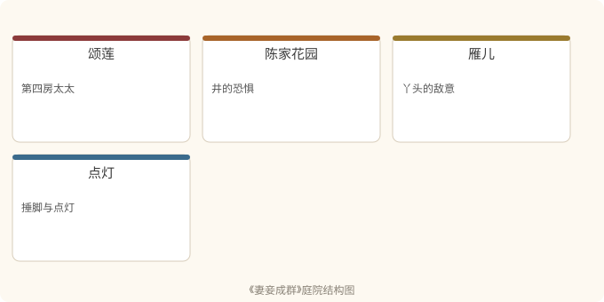

妻妾成群
一、基本信息
| 作者 | 苏童 |
|---|---|
| 成书/出版 | 发表年份待核（《收获》1988年说——通说待核）；苏童代表作之一（中国作家网 C015） 《黄雀记》：作为性格悲剧的美学建构（中国作家网）（官方文学机构） |
| 国别/地区 | 中国 |
| 时代 | 现当代 · 当代 |
| 体裁 | 中篇小说 |
| 语言 | 汉语（白话） |

《妻妾成群》庭院结构图（主题·结构图）
二、创作背景
中国作家网（C015）：'其代表作包括《妻妾成群》《红粉》等中篇'——本作为苏童代表作（C015 官方口径）。
改编（通说待核）：1991年张艺谋电影《大红灯笼高高挂》。
三、内容脉络
颂莲嫁入陈家：四房姨太太的庭院战争（通说待核）。
雁儿、毓如、卓云与'死人井'（通说待核）。
四、主要人物表
| 人物 | 身份 | 说明 |
|---|---|---|
| 颂莲 | 四姨太 | 女大学生嫁入（通说待核） |
| 陈佐千 | 老爷 | 封建家长（通说待核） |
五、主题与艺术特点
- 旧式庭院的女人们（通说）。
- 阴冷的意象主义笔法（通说）。
- 先锋与写实的中间形态（通说待核）。
六、影响与评论
- 中国作家网：列为苏童代表作（C015）。
《黄雀记》：作为性格悲剧的美学建构（中国作家网）（官方文学机构） - 改编电影获威尼斯银狮奖与奥斯卡提名（1991年——通说待核）。
《黄雀记》：作为性格悲剧的美学建构（中国作家网）（官方文学机构）
七、阅读建议
难点
- 庭院空间的心理化。
- 先锋笔法与旧白话的杂糅。
- 《妻妾成群》（上海译文出版社/人民文学出版社版本，通说待核）。
对照《黄雀记》：香椿树街内外。
八、待核实
- 初刊（《收获》1988年第6期说）与发表年份核对。
- 颂莲人名与情节细节核对。
- 电影改编获奖细节待核。
本页主要来源
苏童的其他收录作品：黄雀记